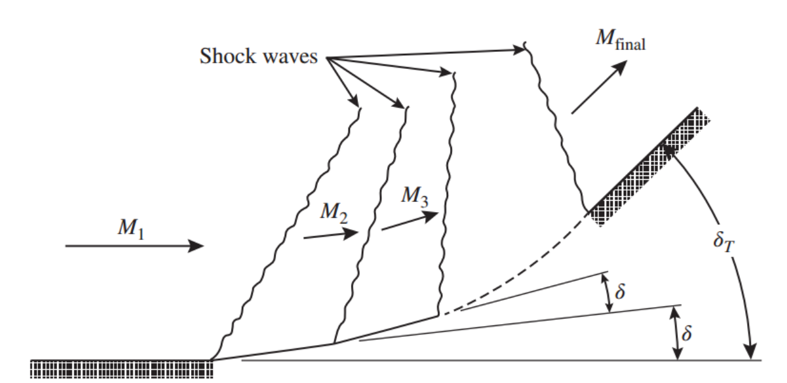
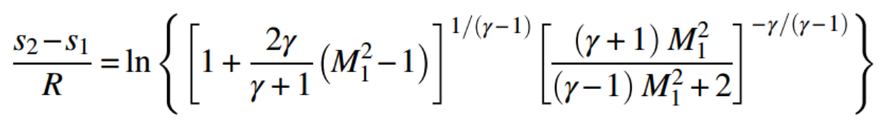
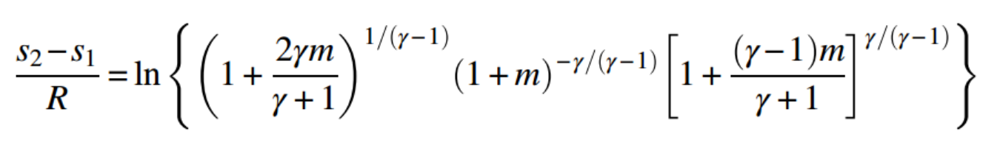
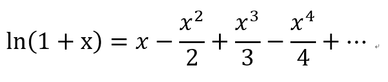
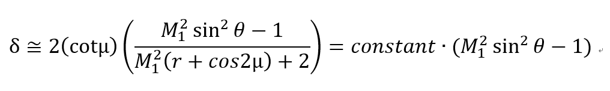
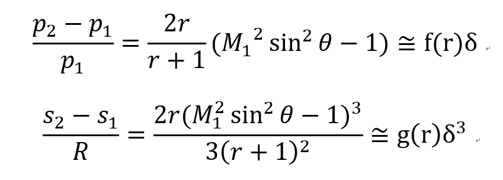
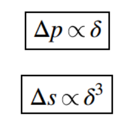
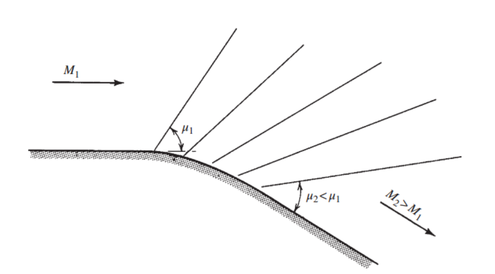

[Gas Dynamics] Ch 8 Prandtl-Meyer Flow - Compression flow
이전 포스터에서는 ch7 oblique shock에
대해서 배웠다.
Oblique shock의 역할 두가지를 remind 해보면
1. Normal shock 보다 약한 압력상승
2. Deflection angle 만큼 속도 방향전환
따라서 왼쪽 사진과 같은 상황에서 우리는 oblique shock이 발생해
유체의 흐름을 바꿔주었다.
하지만, 만약에 오른쪽 그림처럼 Deflection angle이 점점 변한다면???
Round한 Geometry에서 Shock은 어떻게 형성이 될까???
![[Gas Dynamics] Ch 8 Prandtl-Meyer Flow - Compression flow](./images/img-001.png)

아주 천재적인 과학자들의 접근법은 다음과 같다.
deflection angle = 0 -> δT 로 점점 증가하는 상황에서
둥근 벽을 밑 사진처럼 4개의 직선으로 토막내보자
그렇다면 기울어진 벽면이므로 Oblique shock 이 4개 생기고
δ = δT /4
![[Gas Dynamics] Ch 8 Prandtl-Meyer Flow - Compression flow](./images/img-003.jpg)
만약 n개의 직선으로 토막내면?
δ = δT /n, n개의 Oblique shock
그렇다면, n = infinity인 경우,
둥근 벽면 =무한개로 쪼갠 직선 벽면
In that case, δ = 0에 근접 할 것이고,
Oblique shock은 무수히 많을 것이다.
참 신기하게 질문의 해답은 또 다른 질문을 낳는다;;
Q. Deflection angle δ = 0에 근접 한 경우,
Oblique shock은 원래 특징 그대로 맞을까??
이제 이 질문을 머리속에 품고 해결하기 위해 수학식으로 들어가보자.
Oblique shock으로 인한 압력 변화, 엔트로피 변화 두가지를 한번 봐보자
(주목해야 할 것) Oblique shock도 결국 Normal shock relationship에서 파생 되었으므로
Normal shock equation 먼저 살펴보자.
1. 압력 변화
Ch6에서 증명 하였던
압력비율 식
in Normal shock
에서 양변을 1로 빼주면
![[Gas Dynamics] Ch 8 Prandtl-Meyer Flow - Compression flow](./images/img-004.png)
압력차이에 관한 식이 나온다.
2. 엔트로피 변화
[ch3. Entropy-Stagnation Pressure Equation-Ideal gas]
![[Gas Dynamics] Ch 8 Prandtl-Meyer Flow - Compression flow](./images/img-005.png)
+
[ch6. Stagnation pressure ratio bf and after Normal shock]
![[Gas Dynamics] Ch 8 Prandtl-Meyer Flow - Compression flow](./images/img-006.png)
위 식을 연립 해주면

일단
m=M1^2-1으로 치환
하고 정리해보면

ln을 분해해주고 지수를 앞으로 빼주자
![[Gas Dynamics] Ch 8 Prandtl-Meyer Flow - Compression flow](./images/img-009.png)
이 식을 다항식 형태로 정리하기 위해서
Taylor Expansin
을 사용해 ln 함수 -> 다항식

엔트로피식 우항을 모두
Taylor expansion
적용하면
![[Gas Dynamics] Ch 8 Prandtl-Meyer Flow - Compression flow](./images/img-011.png)
이제 이 식을 전부 더하면 third power 항 빼고 모두 소거됨을 알 수 있다.
따라서 최종적으로,
![[Gas Dynamics] Ch 8 Prandtl-Meyer Flow - Compression flow](./images/img-012.png)
Normal shock eq(Pressure, Entropy 차이)를 살펴보았고
이제 진짜 problem을 해결하러 가보자.
Q. Deflection angle δ = 0에 근접 한 경우,
Oblique shock의 특징???
Normal shock Eq. -> Oblique shock Eq. 을 위해
![[Gas Dynamics] Ch 8 Prandtl-Meyer Flow - Compression flow](./images/img-013.png)
수직성분 Only이 Normal shock을 거치므로(ch7에서 설명)
위에서 구한 Normal shock eq(Pressure, Entropy 차이)대입:
![[Gas Dynamics] Ch 8 Prandtl-Meyer Flow - Compression flow](./images/img-014.png)
![[Gas Dynamics] Ch 8 Prandtl-Meyer Flow - Compression flow](./images/img-015.png)
Deflection angle δ is nearly zero,
Therefore, δ = tan δ
[ch7에서 증명한 δ, θ, M1 eq]을 통해
![[Gas Dynamics] Ch 8 Prandtl-Meyer Flow - Compression flow](./images/img-016.png)
θ는 Mach angle(u)에 근접 함을 알 수 있다.
Therefore,
M1를 안다면
Mach angle(u)도 알 수 있으므로,

δ 는 (M1sin θ )^2-1 과 비례
하다고 할 수 있다.
δ관계식을
위에서 구한 P ratio, Enropy 식에 대입해보자

Q. 엔트로피식에서 High order term 왜 맘대로 무시???
M1sin θ -> 1 에 근접하기 때문에(Mach angle)
High order term
= [(nearly 0)^4, (nearly 0)^5, (nearly 0)^6 ...]
= almost zero
As a result, on extremely weak oblique shock:

조금만 더 가봅시다. 아직 조금 남았어요.
자 이제 처음 접했던 Round Geometry를 해석해보자.
Round 벽면을 n개의 직선으로 토막낸 경우,
δ = δT /n, n개의 Oblique shock
In that case,
약한 Oblique shock 압력, 엔트로피 변화 가 n개 모여
Total p,s 변화량이 될 것이다.
한 개의 변화량
따라서 총 변화량은,
![[Gas Dynamics] Ch 8 Prandtl-Meyer Flow - Compression flow](./images/img-020.png)
여기서 Deflection angle 은
δ = δT /n 이므로 대입해준 후
n-> infinity 로 보내주면(round geometry 이므로)
![[Gas Dynamics] Ch 8 Prandtl-Meyer Flow - Compression flow](./images/img-021.png)
정말 신기하게 엔트로피의 변화량 = 0, Isentropic process이다
even there are bunch of shocks
As a conclusion,
1. 벽이 smooth curve 형태 with δT deflection angle 일 경우.
2. 수많은 oblique shock이 형성되지만
3. δ = 0 , θ = Mach angle
4. 모든 Obilque shock은 Mach wave (Mach angle= shock angle 이므로)
(ch4에서 설명)
5. 연속적으로 압력은 증가하고 Ma는 감소한다.
6. 최종 압력차이는 Deflection angle과 비례한다.
7. Entropy 변화는 없다.
따라서, 최종 shock의 모습은 밑 그림과 같다.
무수히 많은 weak oblique shock들이 형성 됨을 볼 수 있다.
![[Gas Dynamics] Ch 8 Prandtl-Meyer Flow - Compression flow](./images/img-022.png)
주목할 만한 3가지 특징이 있어 집고 가보자,
1. u2 > u1
모든 벽면 근처 oblique shock은 Mach wave 임을 알 수 있었다.
why?
또한 Mach angel(u) 는 Ma와 반비례
벽면을 올라갈수록 shock을 거치기 때문에
속도 감소 -> Ma 감소 -> Mach angle 증가
u2>u1
2. 벽에서 떨어진 Oblique shock
벽면에서 떨어진 경우 모든 Oblique shock들이 합쳐져서
한개의 Oblique shock이 이루어 진다.
Deflection angle =
δt와
M1
을 알기 때문에
우리는 Wave angle θ 을 구할 수 있다.
3. △s = 0
계속해서 빨간색으로 표시한 가장 중요한 특징은 바로
Entropy변화가 없다는 것이다.
=Isentropic process
즉, 즉, 즉
Reversible process라는 뜻
따라서 우리는 반대 방향으로 Process도 가능,
모든 Property를 모래 시계 뒤집듯이 그대로 거꾸로 할 수 있다.

![[Gas Dynamics] Ch 8 Prandtl-Meyer Flow - Compression flow](./images/img-024.png)
Left: Smooth convew wall, Right: Sharp convex turn
따라서 우리는 이러한 Isentropic flow들을
Prandtl-Meyer Flow
라고 define.
그리고
왼쪽을
Prandtl-Meyer Compression Flow
, 오른쪽을
Prandtl-Meter Expansion Flow
라고 정의한다.
![[Gas Dynamics] Ch 8 Prandtl-Meyer Flow - Compression flow](./images/img-025.png)